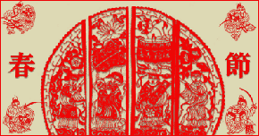
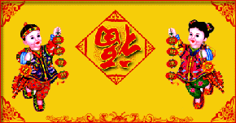

春节一般指除夕和正月初一。但在民间，传统意义上的春节是指从腊月初八的腊祭或腊月二十三或二十四的祭灶，一直到正月十五，其中以除夕和正月初一为高潮。在春节期间，我国的汉族和很多少数民族都要举行各种活动以示庆祝。这些活动均以祭祀神佛、祭奠祖先、除旧布新、迎禧接福、祈求丰年为主要内容。活动丰富多彩，带有浓郁的民族特色。
中国农历年的岁首称为春节。是中国人民最隆重的传统节日，也象征团结、兴旺，对未来寄托新的希望的佳节。据记载，中国人民过春节已有４千多年的历史，它是由虞舜兴起的。公元前两千多年的一天，舜即天子位，带领着部下人员，祭拜天地。从此，人们就把这一天当作岁首，算是正月初一。据说这就是农历新年的由来，后来叫春节。春节过去也叫元旦。春节所在的这一月叫元月。

但是，中国历代元旦的日期并不一致：夏朝用孟春的元月为正月，商朝用腊月（十二月）为正月，秦始皇统一六国后以十月为正月，汉朝初期沿用秦历。汉武帝刘彻感到历纪太乱，就命令大臣公孙卿和司马迁造“太阳历”，规定以农历正月为一岁之首，以正月初一为一年的第一天，就是元旦。此后中国一直沿用夏历（阴历，又称农历）纪年，直到清朝未年，长达２０８０年。春节不同时代有不同名称。在先秦时叫“上日”、“元日”、“改岁”、“献岁”等；到了两汉时期，又被叫为“三朝”、“岁旦”、“正旦”、“正日”；魏晋南北朝时称为“元辰”、“元日”、“元首”、 “岁朝”等；到了唐宋元明，则称为“元旦”、“元 ”、“岁日”、“新正”、“新元”等；而清代，一直叫“元旦”或“元日”。

１９１２年孙中山在南京就任中华民国临时大总统时，宣布废除旧历改用阳历（即公历），用民国纪年。并决定以公元１９１２年１月１日为民国元年１月１日。一月一日叫新年，但不称元旦。但民间仍按传统沿用旧历即夏历，仍在当年２月１８日（壬子年正月初一）过传统新年，其他传统节日也照旧。有鉴于此，１９１３年（民国二年）７月，当时的袁世凯批准以正月初一为春节，并同意春节例行放假，次年起开始实行。１９４９年９月２７日，中国人民政治协商会议第一届全体会议决定在建立中华人民共和国的同时，采用世界通用的公元纪年。为了区分阳历和阴历两个“年”，又因一年２４节气的“立春”恰在农历年的前后，故把阳历一月一日称为“元旦”，农历正月初一正式改称“春节”
临近春节，人们采办年货，除夕时，全家团聚在一起吃年夜饭。贴年画、春联；迎接新的一年来临。
随着新中国的建立，春节庆祝活动更为丰富多彩。不仅保留了过去民间习俗，剔除了一些带有封建迷信的活动，而且增加了不少新的内容。使春节具有新的时代气息。１９４９年１２月２３日，中华人民共和国人民政府规定每年春节放假三天。